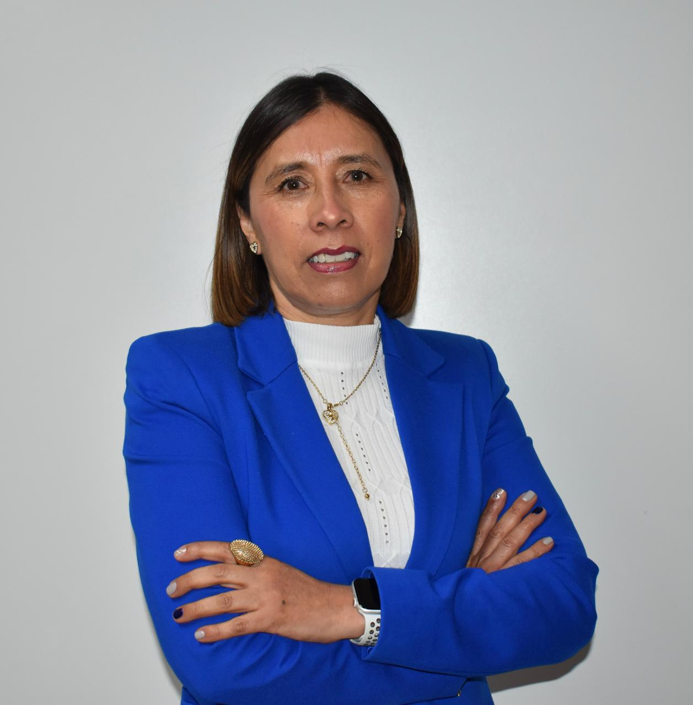
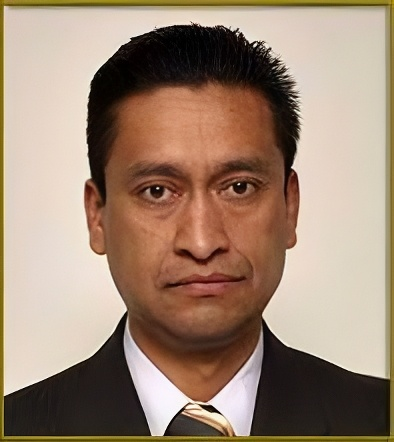

Nelly Ma. de la Paz González Rivas
Propietaria · H. Consejo Universitario
PERSONAL ACADÉMICO · CONSEJO UNIVERSITARIO

Nelly Ma. de la Paz González Rivas
Propietaria · H. Consejo Universitario

David Corona Becerril
Suplente · H. Consejo Universitario
Una representación
presente, cercana y responsable.
Plan de trabajo para llevar la voz del profesorado de la Facultad de Química al H. Consejo Universitario.
La participación responsable e informada del personal académico forma parte esencial de la vida universitaria y de los espacios donde se analizan los asuntos institucionales. En este contexto, la representación ante el H. Consejo Universitario establece un vínculo entre el profesorado y los procesos de análisis, deliberación y toma de decisiones, permitiendo incorporar sus inquietudes, experiencias y propuestas en la vida de la Universidad.
La Facultad de Química ha tenido una participación relevante en el desarrollo de la Universidad a través de su contribución científica, la formación de profesionales y la vinculación con los sectores académico, productivo y social. Esta trayectoria hace necesaria la presencia del personal académico en los espacios institucionales donde se analizan los asuntos relacionados con el presente y futuro de nuestra Universidad.
El presente Plan de Trabajo reúne las directrices que conducirán nuestra participación como representantes del personal académico ante el H. Consejo Universitario durante el periodo 2026–2028. Este compromiso se ejercerá con respeto a la legislación universitaria y bajo principios de responsabilidad institucional, transparencia y diálogo, procurando mantener una comunicación cercana con la comunidad y una participación informada en los asuntos que sean presentados ante este órgano.
La intervención del personal académico en los órganos colegiados contribuye al fortalecimiento de la vida institucional y al ejercicio de la autonomía universitaria. En el caso del H. Consejo Universitario, esta responsabilidad demanda una participación informada y crítica en los procesos de deliberación y toma de decisiones, favoreciendo una conducción democrática, colegiada y transparente. Esta forma de participación mantiene correspondencia con el fortalecimiento de la gobernanza universitaria establecido en el Plan Rector de Desarrollo Institucional 2025–2029, particularmente en lo referente al diálogo, la participación responsable y la corresponsabilidad institucional.
Bajo estas consideraciones, los objetivos del presente Plan de Trabajo definen el alcance de nuestra representación ante el H. Consejo Universitario, orientada al fortalecimiento de la vida colegiada, a mantener una comunicación cercana con el personal académico y a atender responsablemente los asuntos institucionales que tengan efecto en la Facultad de Química y en la comunidad universitaria.
Ejercer una representación activa, responsable e informada ante el H. Consejo Universitario, en apego a la legislación universitaria, para participar con fundamento en los asuntos institucionales, mantener comunicación directa con el personal académico y canalizar, dentro del ámbito de la representación, las necesidades que incidan en el desarrollo académico y profesional de la Facultad de Química.
Las metas establecidas se relacionan directamente con los objetivos del Plan de Trabajo y concretan los compromisos previstos para el periodo de representación. Su desarrollo atenderá lo dispuesto en la legislación universitaria, el Estatuto Universitario y la planeación institucional, sin exceder las atribuciones del cargo y considerando los asuntos que tengan efecto sobre las funciones sustantivas y la operación académica de la Facultad de Química.
Las estrategias y acciones para alcanzar el cumplimiento de las metas planteadas en este Plan de Trabajo, se orientarán hacia una participación responsable e informada ante el H. Consejo Universitario, al fortalecimiento de la comunicación con el personal académico y al seguimiento de los asuntos que incidan en la Facultad de Química, en apego a la legislación universitaria y por las vías institucionales que correspondan.
Garantizar una asistencia del 100% a las sesiones del H. Consejo Universitario de manera puntual y responsable, procurando una participación activa e informada en las comisiones asignadas.
Preparar de manera anticipada la participación ante el H. Consejo Universitario mediante la revisión técnica de la documentación y la atención puntual de los acuerdos y comisiones asignadas.
Convocatorias, órdenes del día, dictámenes y demás documentación del H. Consejo Universitario; facilidades para acudir a sesiones y trabajos de comisión, además de medios de traslado cuando sean necesarios.
Implementar sesiones mensuales de puertas abiertas con el personal académico como mecanismo permanente de comunicación.
Mantener un canal organizado y accesible en los tres campus que permita informar al personal académico, recibir sus planteamientos y canalizar los asuntos que requieran atención.
Espacios físicos para las sesiones de “Puertas Abiertas”, directorios académicos y medios institucionales para informar, registrar y atender los planteamientos del personal académico.
Atender de manera sistemática, dentro de las atribuciones de la representación, los procesos de evaluación, dictaminación, concursos de oposición y juicios de promoción, procurando el cumplimiento normativo, la equidad, la transparencia y el reconocimiento al mérito académico.
Revisar de forma informada los procesos académicos a partir de la normatividad aplicable, detectando posibles ambigüedades y orientando al profesorado sobre los criterios y etapas que los conforman.
Legislación universitaria, reglamentos, convocatorias, lineamientos y dictámenes relacionados con evaluación y promoción académica, así como comunicación con las instancias responsables para realizar consultas cuando sea necesario.
Realizar semestralmente la identificación, canalización y revisión de las acciones relacionadas con infraestructura de laboratorios, abastecimiento oportuno de reactivos y necesidades planteadas por la comunidad académica, dentro de las atribuciones del representante.
Establecer un sistema básico de diagnóstico que organice y jerarquice, a partir de evidencia, las necesidades de infraestructura, mantenimiento y abastecimiento de reactivos para remitirlas a las instancias responsables de su atención.
Información disponible sobre infraestructura, mantenimiento y reactivos; contacto con responsables de laboratorios y áreas académicas; y enlace con la Administración de la Facultad y las instancias que correspondan.
Llevar a cabo al menos una actividad por semestre de diálogo y formación continua, dirigida al bienestar emocional y al fortalecimiento profesional del personal académico, con apoyo de las instancias universitarias competentes mediante actividades informativas, de sensibilización o vinculación.
Coordinar con las instancias universitarias competentes la realización de espacios breves y accesibles de diálogo, formación continua y bienestar para el profesorado, bajo un enfoque preventivo.
Coordinación con instancias universitarias relacionadas con formación continua y bienestar, espacios físicos o plataformas institucionales y materiales de apoyo para las actividades programadas.
El siguiente cronograma de actividades muestra la distribución de las acciones previstas durante los 24 meses de representación, de acuerdo con la frecuencia establecida y, cuando corresponda, con el calendario de sesiones del H. Consejo Universitario. Su organización permitirá mantener continuidad en el trabajo y dar seguimiento al cumplimiento de las metas planteadas.
| Acción / meta | S1Meses 1–6 | S2Meses 7–12 | S3Meses 13–18 | S4Meses 19–24 |
|---|---|---|---|---|
| Meta 1 · Representación responsableProgramación de sesiones | Cada mes | Cada mes | Cada mes | Cada mes |
| Meta 1 · Representación responsableRevisión previa de documentos | Cada mes | Cada mes | Cada mes | Cada mes |
| Meta 1 · Representación responsablePreparación de notas de análisis | Cada mes | Cada mes | Cada mes | Cada mes |
| Meta 1 · Representación responsableAtención de comisiones | Cada mes | Cada mes | Cada mes | Cada mes |
| Meta 1 · Representación responsableRegistro y canalización de acuerdos | Cada mes | Cada mes | Cada mes | Cada mes |
| Meta 2 · Puertas AbiertasSesiones mensuales de “Puertas Abiertas” | Cada mes | Cada mes | Cada mes | Cada mes |
| Meta 2 · Puertas AbiertasRegistro y clasificación de asuntos | Cada mes | Cada mes | Cada mes | Cada mes |
| Meta 2 · Puertas AbiertasCanalización de planteamientos | Cada mes | Cada mes | Cada mes | Cada mes |
| Meta 2 · Puertas AbiertasConcentrado mensual de atención | Cada mes | Cada mes | Cada mes | Cada mes |
| Meta 3 · Desarrollo académicoRevisión de procesos de evaluación y promoción | Meses 1, 2, 4, 5, 6 | Cada mes | Cada mes | Cada mes |
| Meta 3 · Desarrollo académicoDifusión de información y atención de consultas | Cada mes | Cada mes | Cada mes | Cada mes |
| Meta 3 · Desarrollo académicoRegistro de aspectos recurrentes | Mes 6 | Mes 12 | Mes 18 | Mes 24 |
| Meta 4 · Laboratorios y reactivosIdentificación de necesidades | Mes 6 | Mes 12 | Mes 18 | Mes 24 |
| Meta 4 · Laboratorios y reactivosOrganización y canalización de necesidades | Mes 6 | Mes 12 | Mes 18 | Mes 24 |
| Meta 4 · Laboratorios y reactivosPresentación del concentrado | Mes 6 | Mes 12 | Mes 18 | Mes 24 |
| Meta 4 · Laboratorios y reactivosComunicación de avances | Mes 6 | Mes 12 | Mes 18 | Mes 24 |
| Meta 5 · Bienestar y formaciónActividad semestral de diálogo y formación | Mes 6 | Mes 12 | Mes 18 | Mes 24 |
| Meta 5 · Bienestar y formaciónDifusión y rutas institucionales de apoyo | Mes 5 | Mes 11 | Mes 17 | Mes 23 |
| Meta 5 · Bienestar y formaciónRetroalimentación y evaluación semestral | Mes 6 | Mes 12 | Mes 18 | Mes 24 |
Mostrando las 19 acciones de los cinco compromisos durante los cuatro semestres.
Meses contados desde el inicio de la representación. El segundo año corresponde a los meses 13–24. La distribución reproduce el PDF final; las sesiones se ajustan a las convocatorias oficiales.
Las políticas bajo las cuales se ejercerá la representación ante el H. Consejo Universitario plasmada en el presente Plan de Trabajo se presentan a continuación. Su aplicación permitirá mantener una actuación responsable e informada, en apego a la legislación universitaria, procurando además un manejo adecuado de la información y una comunicación respetuosa con la comunidad académica, respetando la transparencia institucional.
Como organismo público autónomo con personalidad jurídica y patrimonio propios, la Universidad Autónoma del Estado de México (UAEMÉX) cumple sus funciones a través de la generación, preservación, transmisión y extensión del conocimiento. Estas actividades mantienen una orientación social y contribuyen al desarrollo humanístico, científico, tecnológico y cultural tanto del Estado de México como del país. La participación de su comunidad en los órganos colegiados forma parte de la vida institucional y permite intervenir en el análisis, discusión y resolución de los asuntos relacionados con el desarrollo de la Universidad. En este marco, la representación docente ante el H. Consejo Universitario permite vincular al personal académico con los procesos de deliberación y toma de decisiones que se llevan a cabo en este órgano.
Esta representación es de vital importancia para la FQ por la diversidad de actividades académicas que se desarrollan, integradas por la formación profesional, la investigación científica- tecnológica y la vinculación con los sectores de la sociedad. El desarrollo de estas actividades hace necesario que las necesidades, inquietudes y propuestas de la comunidad docente puedan ser comunicadas para considerarse dentro de los espacios institucionales correspondientes.
Lo anterior vuelve necesario el establecimiento de mecanismos de comunicación para informar oportunamente sobre los asuntos discutidos en el H. Consejo Universitario, permitiendo conocer la opinión y necesidades de la comunidad docente. Esta comunicación conduce al fortalecimiento del vínculo entre representados y representantes para favorecer la participación informada de los temas que inciden en la vida académica de la FQ.
Resultan particularmente importantes los procesos de evaluación, dictaminación académica, concursos de oposición y juicios de promoción, cuya relación directa con el desarrollo profesional del personal académico. El seguimiento dentro del ámbito de sus atribuciones contribuye al apego a normatividad institucional, favoreciendo la equidad, transparencia y reconocimiento al mérito académico.
Las necesidades académicas para el correcto desarrollo de las actividades de la Facultad de Química incluyen las condiciones de infraestructura de laboratorios y aulas, así como el abastecimiento oportuno de los reactivos. Por ello, identificar y comunicar estas necesidades, así como canalizarlas ante las instancias correspondientes, permite contribuir al seguimiento de acciones dirigidas a mantener las condiciones adecuadas y seguras para la docencia y el resto de las actividades académicas.
Finalmente, es necesario fortalecer a la comunidad docente a través de considerar espacios de diálogo, formación continua y bienestar como eje para el desarrollo de sus funciones. Bajo estas premisas, el presente Plan de Trabajo plantea una representación responsable, informada y apegada a la normatividad universitaria, basada en la comunicación con el personal académico para el seguimiento de los asuntos que inciden directamente en el desarrollo de la comunidad de la Facultad de Química y de la Universidad.
Para la elaboración del presente Plan de Trabajo se utilizó ChatGPT, de OpenAI como apoyo para la revisión de redacción y de la estructura del documento como lo establece la convocatoria. Su uso no sustituyó el criterio, diagnóstico ni la propuesta intelectual de las personas integrantes de la fórmula, quienes definieron los objetivos, metas, estrategias, acciones y contenido sustantivo del Plan.
Cada mes, una sesión abierta en un campus distinto para informar sobre los asuntos del H. Consejo Universitario, recibir planteamientos y darles seguimiento. También puede escribirnos con dudas o propuestas.
Próxima sesión
Sede, fecha y hora por confirmar.
Teléfono / extensión
Por confirmar.
Sedes
Los tres campus de la Facultad de Química